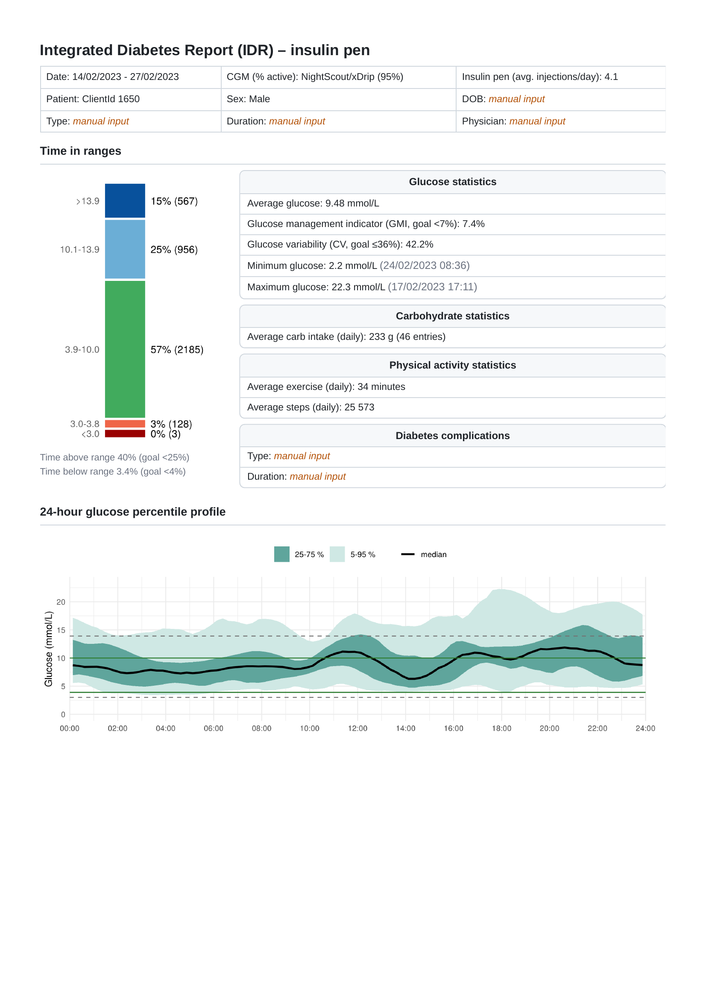
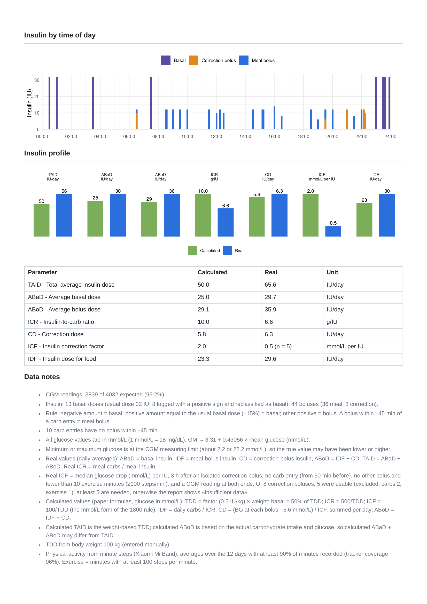

Integrated Diabetes
Report
A consolidated view of glucose patterns, treatment, and daily measures to support a clearer understanding of diabetes data.
Glucose
Continuous glucose monitoring, glucose patterns and standardized metrics.
Treatment
Insulin therapy and related treatment information.
Daily measures
Carbohydrate intake and physical activity data.
Clinical context
Additional information needed to interpret monitoring data.
Diabetes information, together in one view.
The IDR is a compact, two-page summary that integrates continuous glucose monitoring (CGM), insulin, carbohydrate intake, and physical activity. Glucose is summarized across five consensus ranges: below 3.0, 3.0–3.8, 3.9–10.0, 10.1–13.9, and above 13.9 mmol/L. Its 24-hour glucose percentile profile represents the 5th, 25th, 50th, 75th, and 95th glucose percentiles in 15-minute time-of-day bins. Mean carbohydrate intake, steps, and exercise minutes add daily context. Basal, meal-bolus, and correction-bolus insulin doses are shown on the same 24-hour time axis; a separate insulin profile compares seven formula-derived indices with values calculated from recorded doses.
Inside the report.
Glucose and insulin information brought together in the IDR.


Article reference.
Publication describing the Integrated Diabetes Report.
-
Aldaghi T, Bem R, Muzik J. Enhancing diabetes monitoring systems’ reports: A novel integrated diabetes report (IDR). International Journal of Medical Informatics. 2026;209:106288. doi:10.1016/j.ijmedinf.2026.106288.
Original article introducing the report.